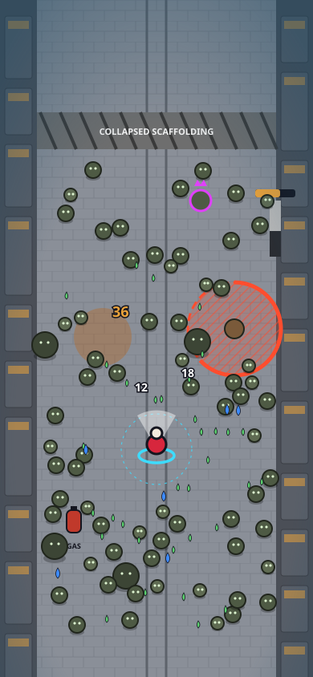

VATMAN
on the red tram
TRAM RUSH lane: 1.2 s warning
Bell shockwave: 0.8 s
Get off the tracks!
ULT
06 Boss fight: The Vatman (L10)
Specs: content-catalog.md 6 · design-system.md 6.3 · game-design.md 4.7
- Boss bar: name, phase label, and notches at the phase thresholds (60%, 25%), always under the XP area.
- Tram Rush: the whole rail lane glows hatched red for 1.2 s, then the tram crosses. It also kills every zombie in its path, so luring zombies onto the tracks is the skill expression.
- Every boss attack telegraph is ≥ 0.8 s, exact shape = exact hit area, and the edge fills toward impact.
- One contextual warning toast at most, only for the first occurrence of each attack.
- The screen pauses for nothing: the phase-change beat is a 0.6 s camera zoom-out, not a cutscene.